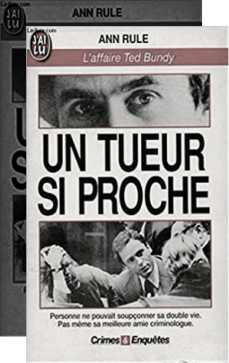

Charme mortel du tueur en série Ted Bundy
L’image du serial killer dans les médias est sérieusement remise en question avec le cas Ted Bundy. En manipulant le système judiciaire, il réussit à assurer sa propre défense grâce à ses connaissances en droit et avec l’aide de cinq autres avocats. Les différentes audiences du procès ressemblent alors à des spectacles orchestrés par le tueur lui-même où il n’hésite pas à faire répéter les déclarations des témoins pour se dispenser des récits de ses crimes.
NOMBRE DE VICTIMES
PROUVÉS
SUPPOSÉS
Janice Ann Ott
Rita Lorraine Jolly
Lynette Culver
Lynda Ann Healy
Rhonda stapley
Caryn Campbell
Rita Curran
Lisa Levy
L'AMOUR "FOU"
Alors que cette atroce histoire survient en pleine période d’émancipation féminine et de revendications pour les droits des femmes, de nombreuses femmes, fascinées par le personnage, assistent à son procès. À la fois attirées et apeurées par Ted Bundy, certaines témoignent dans les médias de leur étonnement face au physique charmant du tueur. Une de ses amies, Carole Boone, qui le défend corps et âme développe une obsession amoureuse maladive pour lui et Ted Bundy l’utilise à son avantage en la demandant en mariage lors d’une audience afin d’attendrir le jury.
La Décision final
Bundy a été exécuté deux ans plus tard, en 1989, après avoir échoué à de nombreux recours devant le juge Cowart et la Cour d'appel pour annuler sa condamnation ou se voir accorder un nouveau procès.
LE COULOIR DE LA MORT
L’exécution n’aura pas lieu avant plusieurs années. Durant les neufs années suivantes, Bundy utilise tous les recours possible pour en appeler de sa condamnation. Bundy a cru jusqu’au matin même de l’execution qu’il pourrait repousser l’inévitable.
1999
DESCRIPTION
C’est en larmes que le juge a prononcé lundi le verdict à l’encontre de l’un des pires serial killer que les Etats-Unis aient connu. Rodney Alcala, surnommé «le nouveau Ted Bundy», et connu pour avoir participé au jeu télévisé «Dating Game», a écopé de la prison à vie.
2002
DESCRIPTION
Tueur nécrophile, Ted Bundy dissimule sa vraie nature sous une apparence très avenante qui lui permettra d'assassiner plus de trente jeunes femmes entre 1974 et 1978.
2013

DESCRIPTION
C’est en larmes que le juge a prononcé lundi le verdict à l’encontre de l’un des pires serial killer que les Etats-Unis aient connu. Rodney Alcala, surnommé «le nouveau Ted Bundy», et connu pour avoir participé au jeu télévisé «Dating Game», a écopé de la prison à vie.
2014
DESCRIPTION
Ted Bundy. Un nom qui évoque l'horreur la plus absolue dans l'Amérique des années 70. Depuis Jack l'Éventreur, aucun autre tueur n'a autant suscité l'engouement de la presse et du public.
2019
DESCRIPTION
Une sobriété dans le traitement narratif qui contribuerait presque à semer le doute sur la réelle culpabilité de Ted Bundy, pour finalement se terminer en apothéose.
2019
DESCRIPTION
Très attendu, le film en a déçu certains, qui n’ont pas manqué de dénoncer le manque de scènes sanglantes. Un détail qui a, au contraire, beaucoup plu à Kathy Kleiner Rubin, survivante d'une attaque du serial killer qui s'est exprimé sur les réseaux sociaux.